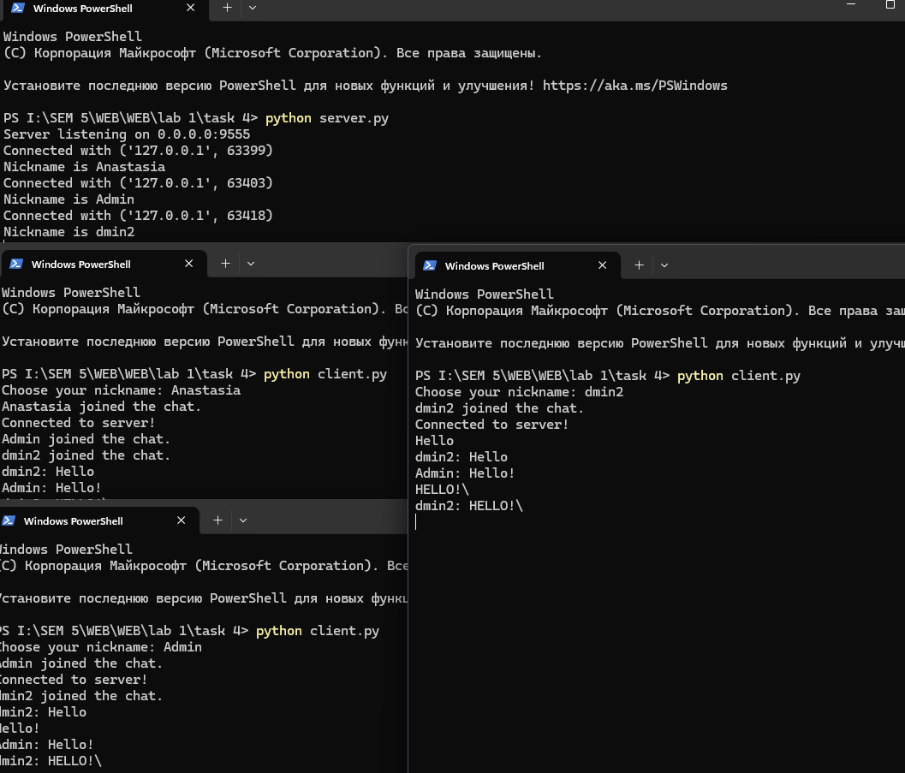

Задание 4
Реализовать двухпользовательский или многопользовательский чат. Реализация многопользовательского чата позволяет получить максимальное количество баллов.
Реализовать с помощью протокола TCP – 100% баллов, с помощью UDP – 80%. Обязательно использовать библиотеку threading.
Для реализации с помощью UDP, threading использовать для получения сообщений у клиента. Для применения с TCP необходимо запускать клиентские подключения И прием и отправку сообщений всем юзерам на сервере в потоках. Не забудьте сохранять юзеров, чтобы потом отправлять им сообщения.
Реализован многопользовательский чат.
Решение
server.py
import socket
import threading
# базовая конфигурация и инициализация прослушивающего TCP-сокета
HOST = '0.0.0.0'
PORT = 9555
server = socket.socket(socket.AF_INET, socket.SOCK_STREAM)
server.setsockopt(socket.SOL_SOCKET, socket.SO_REUSEADDR, 1)
server.bind((HOST, PORT))
server.listen()
print(f'Server listening on {HOST}:{PORT}')
# общее хранилище активных соединений и никнеймов; блокировка для безопасного доступа из потоков
clients = []
nicknames = []
clients_lock = threading.Lock()
# утилита для рассылки сообщения всем подключённым клиентам
def broadcast(message: bytes):
with clients_lock:
for client in clients:
try:
client.sendall(message)
except:
# если отправка не удалась, просто пропускаем этот сокет
pass
# обработчик одного клиента: читаем сообщения и транслируем их всем
def handle(client: socket.socket):
while True:
try:
# приём очередного сообщения от клиента
data = client.recv(1024)
if not data:
# пустые данные означают закрытие соединения клиентом
raise ConnectionResetError
# определяем ник клиента для префикса сообщения
with clients_lock:
idx = clients.index(client)
nickname = nicknames[idx]
# формируем строку "nickname: текст" и рассылаем всем
message = f'{nickname}: {data.decode("utf-8")}\n'
broadcast(message.encode('utf-8'))
except:
# удаляем клиента из списков и уведомляем остальных о выходе
with clients_lock:
if client in clients:
idx = clients.index(client)
clients.remove(client)
nickname = nicknames.pop(idx)
else:
nickname = 'unknown'
try:
client.close()
finally:
broadcast(f'{nickname} left the chat.\n'.encode('utf-8'))
print(f'{nickname} left the chat.')
break
# главный цикл принятия подключений и первичной регистрации клиента (handshake)
def receive():
while True:
# ожидание нового входящего подключения
client, address = server.accept()
print(f'Connected with {address}')
try:
# простое рукопожатие: запрашиваем ник и получаем его
client.sendall(b'NICK')
nickname = client.recv(1024).decode('utf-8').strip()
except:
client.close()
continue
# сохраняем клиента и его ник для последующих рассылок
with clients_lock:
clients.append(client)
nicknames.append(nickname)
# уведомляем всех о присоединении и запускаем поток-обработчик
print(f'Nickname is {nickname}')
broadcast(f'{nickname} joined the chat.\n'.encode('utf-8'))
client.sendall(b'Connected to server!\n')
# отдельный поток для приёма сообщений от этого клиента
threading.Thread(target=handle, args=(client,), daemon=True).start()
if __name__ == '__main__':
try:
receive()
except KeyboardInterrupt:
# аккуратное завершение по Ctrl+C
print('\nShutting down...')
finally:
# закрываем все активные сокеты и слушатель
with clients_lock:
for c in clients:
c.close()
server.close()
client.py
import socket
import threading
# ввод ника перед подключением; пустой ник заменяем на Anonymous
nickname = input('Choose your nickname: ').strip() or 'Anonymous'
# создание TCP-сокета клиента и подключение к серверу
client = socket.socket(socket.AF_INET, socket.SOCK_STREAM)
client.connect(('127.0.0.1', 9555))
# фоновый поток: непрерывно читаем сообщения от сервера и печатаем их
def receive():
while True:
try:
message = client.recv(1024).decode('utf-8')
if not message:
print('[Disconnected from server]')
break
# обработка простого рукопожатия ника
if message == 'NICK':
client.send(nickname.encode('utf-8'))
else:
# печатаем входящее сообщение; добавляем перенос строки при необходимости
print(message, end='' if message.endswith('\n') else '\n')
except:
# любое исключение трактуем как разрыв связи и закрываем сокет
print('An error occurred. Closing connection.')
client.close()
break
# фоновый поток: читаем пользовательский ввод и отправляем на сервер
def write():
while True:
try:
text = input()
except EOFError:
# разрешаем завершение клиента по EOF (Ctrl+Z/Ctrl+D в разных ОС)
break
try:
client.send(text.encode('utf-8'))
except:
# если отправка не удалась, завершаем поток отправки
break
# запускаем два независимых потока: приём и отправка, чтобы они не блокировали друг друга
receive_thread = threading.Thread(target=receive)
receive_thread.start()
write_thread = threading.Thread(target=write)
write_thread.start()

В работе реализован многопользовательский чат на TCP с использованием threading. Сервер принимает новые подключения, хранит список клиентов и никнеймов и рассылает сообщения всем участникам в потокобезопасном режиме. Для каждого клиента запускается отдельный поток обработки, а у клиента разнесены получение и отправка сообщений по двум потокам, что исключает блокировки. Решение соответствует требованиям задания и корректно обрабатывает подключение/отключение пользователей.